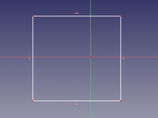
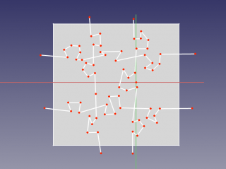
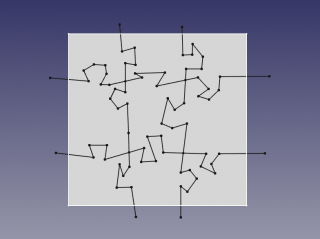
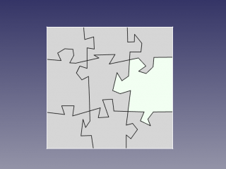
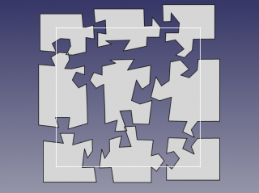

|
| Emplacement du menu |
|---|
| Part → Split → Slice |
| Ateliers |
| Part |
| Raccourci par défaut |
| Aucun |
| Voir aussi |
| Fragments Booléens Part, Part XOR, Joindre (assembler) des parois, Opérations Booléennes |
Description
Outil pour séparer les formes par intersection avec d'autres formes. Par exemple, pour un cube et un plan, un composé de deux solides est créé.
(Sur l'image ci-dessus, les pièces ont été déplacées manuellement après l'operation, pour montrer le découpage)
La forme final occupe le même volume que l'original. Mais il est divisé la ou il intersecte les autres formes. Les pièces découpées sont placées dans un composé (ou compsolid), de sorte que l'objet semble rester en une seule pièce. Vous devez exploser le composé pour obtenir des pièces individuelles. Utilisez, par exemple, Draft Downgrade à cette fin.
L'outil comporte trois modes: "Standard", "Split" et "CompSolid".
"Standard" et "Split" diffèrent par l'action de l'outil sur les fils, les shells et les compsolids: Pour "Split", ceux-ci sont séparés; Pour «Standard», ils sont conservés ensemble (on obtient des segments supplémentaires).
Le composé dans les modes "Standard" et "Split" suit la structure de la pièce tranchée
En mode "CompSolid", la sortie est un compsolid (ou un composé de compsolids, si les solides résultants ne sont pas connectés). Un compsolid est un ensemble de solides reliés par des faces; Ils sont liés aux solides, comme les arrete sont liés aux bords, et les coques sont liées aux faces; Le nom est probablement une phrase abrégée «solide composite».
Le résultat de l'outil est très similaire à Boolean Fragments, sauf que les parties de la première forme sont dans le résultat.
Utilisation
- Sélectionnez l'objet à couper, d'abord, puis les objets servant a découper.
L'ordre de sélection est important. Les composés avec auto-intersections ne sont pas autorisés (les auto-intersections peuvent parfois être prises en compte en passant le composé via BooleanFragments) - Appelez la commande Part Slice.
Un objet paramétrique Slice est créé. Les objets d'origine sont cachés et le résultat de l'intersection est affiché en 3D.
Propriétés
Slice
- DONNÉES Base: Objet à trancher.
- DONNÉES Tools: Liste des objets de découpe. (À partir de FreeCAD v0.17.8053, cette propriété n'est pas affichée dans l'éditeur de propriétés, et ne peut être accessible qu'avec Python).
- DONNÉES Mode: "Standard", "Split" ou "CompSolid". "Split" est la valeur par défaut. Standard et Split diffèrent par l'action de l'outil sur les formes de type d'agrégation: si Split est séléctionné, ceux-ci sont séparés; Sinon ils sont conservés ensemble (on obtiens alors des morceaux supplémentaires).
- DONNÉES Tolerance: valeur "flou". Il s'agit d'une tolérance supplémentaire à appliquer lors de la recherche d'intersections, en plus des tolérances stockées dans les formes d'entrée.
Exemple ; Créer un Puzzle
- aller dans Sketcher Workbench, Créer une nouvelle équisse. Dessiner un rectangle qui sera la forme extérieur du Puzzle. Fermer l'esquisse.
 - aller dans Part workbench. sélectionner l'esquisse, et cliquer sur Pièce->Créer une face a partir de l'esquisse (dans le menu).

- Aller dans l'atelier Esquisse, et créer une esquisse sur le même plan. En utilisant l'outil polyligne, dessiner les lignes qui vont séparer le puzzle en plusieurs morceaux.
 - basculer dans l'atelier pièce. Sélectionner l'esquisseur de découpe, et appliquer Part Boolean Fragments. Ceci insèrera des arrètes a l'emplacement des lignes de l'esquisse de découpe. Ceci est obligatoire pour que l’étape suivante fonctionne.
 - Sélectionner la face rectangulaire, et BooleanFragments ,et appliquer Part Split.
 - Basculer dans l'atelier dessin, appliquer Draft Downgrade au résultat. Vous devez avoir tous les morceaux en tant que "Face00X" dans l'arbre du document, ils peuvent être déplacer indépendamment les uns des autres.


{kind=link}
{kind=link}
{kind=link}
{kind=link}
{kind=link}
{kind=link}
Procédure
L'outil peut être utilisé dans une macros et à partir de la console python en utilisant la fonction suivante:
BOPTools.SplitFeatures.makeSlice(name)
- Crée une fonction Slice vide. Les propriétés «Base» et «Outils» doivent être attribuées explicitement, par la suite.
- Renvoi l'objet nouvellement créé.
Slice peut également être appliqué à des formes simples, sans avoir besoin d'un objet de document via :
Part.BOPTools.SplitAPI.slice(base_shape, tool_shapes, mode, tolerance = 0.0)
Cela peut être utile pour créer des fonctionnalités de script personnalisées Python.
Exemple:
import Part j = Part.BOPTools.SplitFeatures.makeSlice(name= 'Slice') j.Base = FreeCADGui.Selection.getSelection()[0] j.Tools = FreeCADGui.Selection.getSelection()[1:]
L'outil lui-même est implémenté en Python, voir /Mod/Part/BOPTools/SplitFeatures.py la où FreeCAD est installé.
Version
L'outil a été introduit dans FreeCAD v0.17.8053. FreeCAD doit être compilé avec OCC 6.9.0 ou version ultérieure; Sinon, l'outil n'est pas disponible.